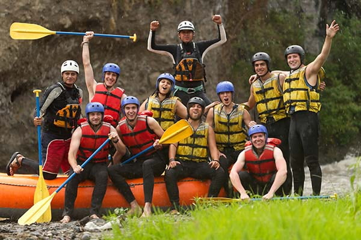

With a commitment to safety, quality and value for money, Nile River Explorers focus on providing our clients with an all inclusive experience of the Nile. We take a personal interest in every detail of your day to ensure your time with us is simply unforgettable.